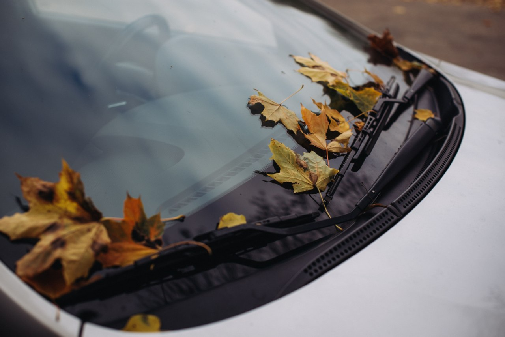

Home / Maintenance
Wiper Blades Streaking? Signs to Replace Them and How to Do It
Quick answer
Replace wiper blades when they streak, smear, skip, squeak or have split or cracked rubber. Most last roughly 6 to 12 months. Check the size for each side in your manual, lift the arm, release the clip, slide the old blade off, click the new one on and lower the arm gently onto the glass.

Signs your wiper blades are worn
- Streaks or smears that stay after the wipe
- Skipping or chattering across the glass
- Squeaking that isn't just a dry windscreen
- Split, cracked or hardened rubber, which you can see and feel
- A hazy film that builds up in rain
- Bent frames that lift away from the glass
Try cleaning them first
Dirty rubber can cause the same problems as worn rubber. Wipe the blade edge and the windscreen with a cloth and some washer fluid or isopropyl alcohol. If the streaks vanish, the blades had grime. If they return, replace them.
How often should you change wiper blades?
Many people change them about once a year. Sun, heat, ice and dust shorten the life, and so does running them on a dry screen. If you park outside in a hot climate, check them more often.
How to find the right size
The driver's and passenger's blades are often different lengths, and the rear may be different again. Check the manual, the packaging of the old blades or a parts-shop lookup for your model and year. Also note the fitting type, such as a hook, a pinch tab or a side pin.
Types of wiper blades
- Conventional: metal frame, cheapest.
- Beam (flat): one-piece, more even pressure, often better in winter.
- Hybrid: a mix of both.
Fitting new blades is a good time for other small checks. The cabin filter is one of them: see Cabin Air Filter: Signs You Need a New One.
How to change wiper blades
- Lift the wiper arm away from the windscreen until it stays upright.
- Place a folded towel on the glass under the arm, in case it drops.
- Find the release tab or clip where the blade joins the arm and press it.
- Slide the old blade down and off the hook.
- Slide the new blade on until it clicks, and tug it to check it's locked.
- Lower the arm gently onto the glass. Don't let it snap down.
- Spray the windscreen and test.
Tip. A wiper arm that snaps onto the glass can crack a windscreen, so guide it down by hand.
Cold weather also affects tyres and fluids; see How to Check Tire Pressure Correctly and How to Check Coolant Level and Top It Up Safely.
Winter care
Clear ice before using the wipers and don't use them to scrape frost. Lifting the arms off the glass overnight stops the rubber freezing to it.
FAQ
How often should wiper blades be replaced?
Roughly every 6 to 12 months, sooner if they streak or squeak.
Why do new wipers still streak?
The windscreen may have wax, oil or grime on it. Clean the glass and the blade edge, and check the blade is fully clipped on.
Can I change just one wiper blade?
Yes, but they wear at the same rate, so replacing both is usually sensible.
This guide is general information, not professional advice. Check your own vehicle's manual for exact specs and read the disclaimer before starting any job.